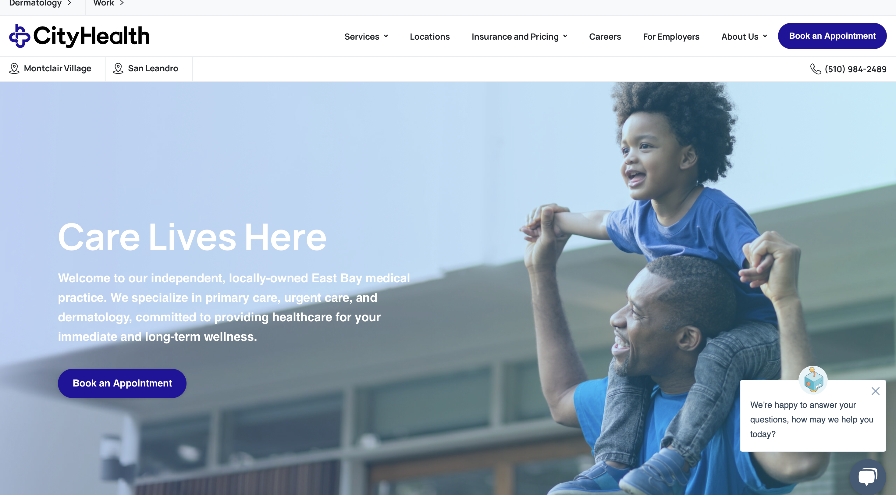
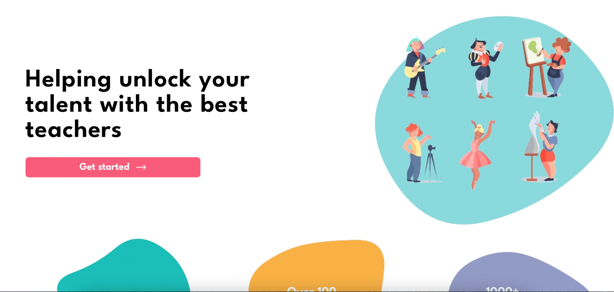
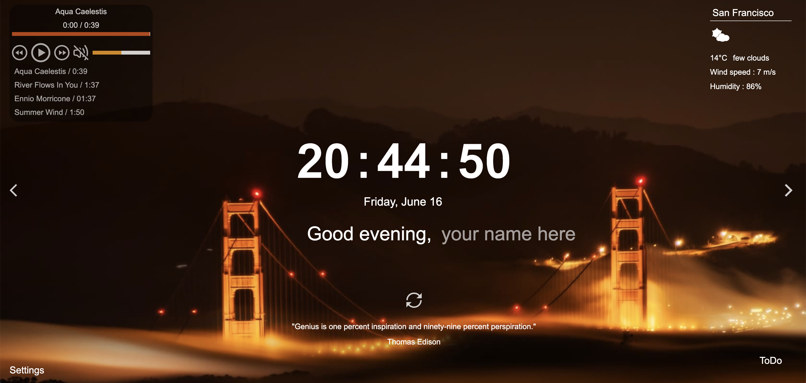
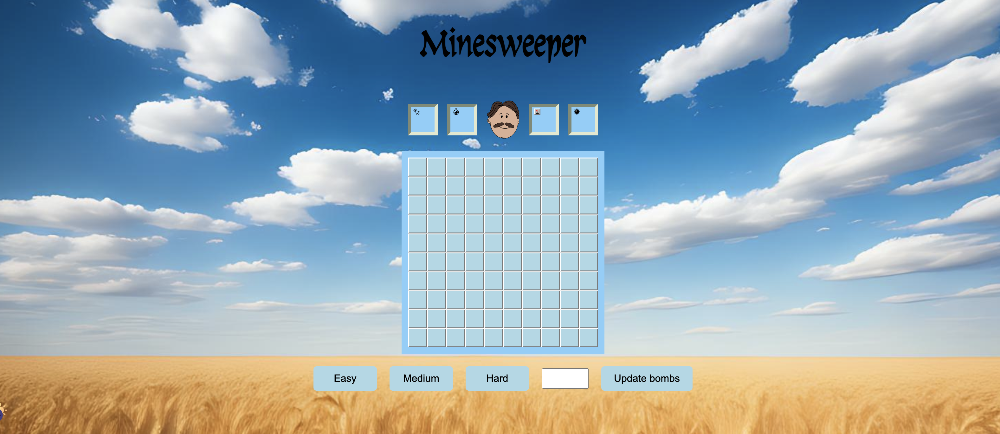
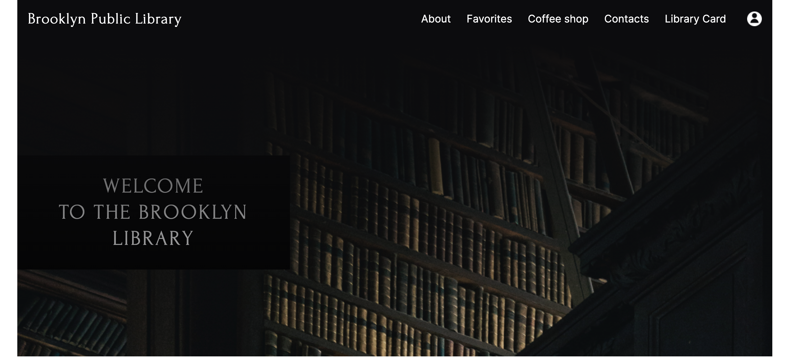

Experienced frontend developer with roots in Quality Assurance. My curiosity about 'how it works'
behind the UIs I once tested led me to frontend development.
Today, I merge my QA eye for detail with my passion for crafting seamless interfaces.
Explore my blend of precision and design!

CityHealth is a revitalized WordPress website for a medical clinic. This project involved a full-scale renovation
of the clinic’s existing website to implement a fresh, modern design while enhancing usability and functionality. Key improvements include
a revamped layout, optimized navigation, and custom sections for services, staff profiles, and patient resources, making it easier for users to find information and schedule appointments. This project showcases expertise in WordPress design, user experience, and healthcare-focused content structuring.

TalentStudio is an innovative full-stack platform that connects students with passionate arts teachers, fostering a vibrant, interactive learning environment. More than just a matchmaking service, TalentStudio enhances the artistic journey by providing features such as lesson booking, real-time notifications, and streamlined lesson organization for teachers. This application empowers students to explore and deepen their artistic skills while offering teachers an efficient way to manage and grow their classes.

A clone of Google's Momentum extension was created using JavaScript, HTML, and CSS.
The new-tab dashboard features a clock, real-time weather data, to-do list, and daily quotes.
Asynchronous JavaScript and APIs were utilized for real-time,
location-based weather updates. Daily refreshed backgrounds and quotes ensure a dynamic user experience.
This project serves as a testament to
proficiency in handling APIs, async functions, and core web development.

A haven where love meets technology. Responsive and interactive platform is dedicated to bridging the gap between adorable pets and their potential forever homes. This website offers a visually appealing and intuitive list of pets eagerly awaiting adoption. Delve into an enriched browsing experience with its dynamic sliders, immersive modal windows, and seamless pagination. Adopt a pet, touch a life, and witness the transformative power of love and technology.

A web-based version of the classic Minesweeper game was built using JavaScript, HTML, and CSS.
The game features customizable difficulty settings, a dynamic game board, and a score tracking system.
Key functionalities like marking mines, tracking play time, and win/lose alerts were implemented using
JavaScript.
This project demonstrates proficiency in game logic, UI design, and user experience optimization. Mastery of
JavaScript and understanding of
game development patterns are highlighted through this implementation.

An alternative to the Brooklyn Library website was crafted utilizing HTML, CSS, and JavaScript. Key site
features include an inviting introduction,
a visually-striking image carousel, a dynamic 'favorites' section for intuitive seasonal book browsing, and
a comprehensive in-library coffee shop section complete with a detailed menu.
Through incorporating interactive functionalities and designing a user-friendly interface, a seamless and
engaging user experience is ensured. This project exemplifies proficient web development and user-centric
design skills.